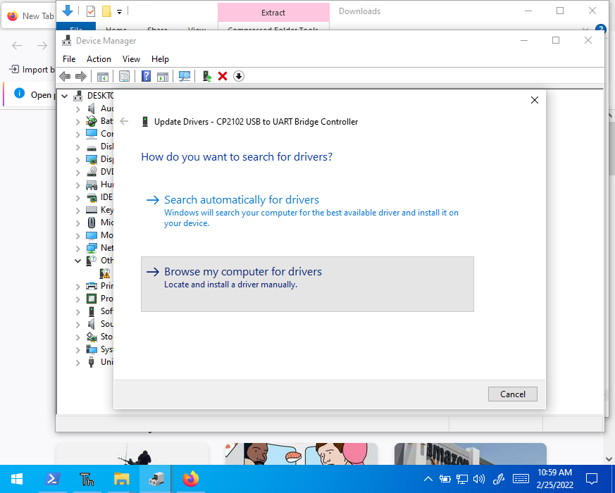
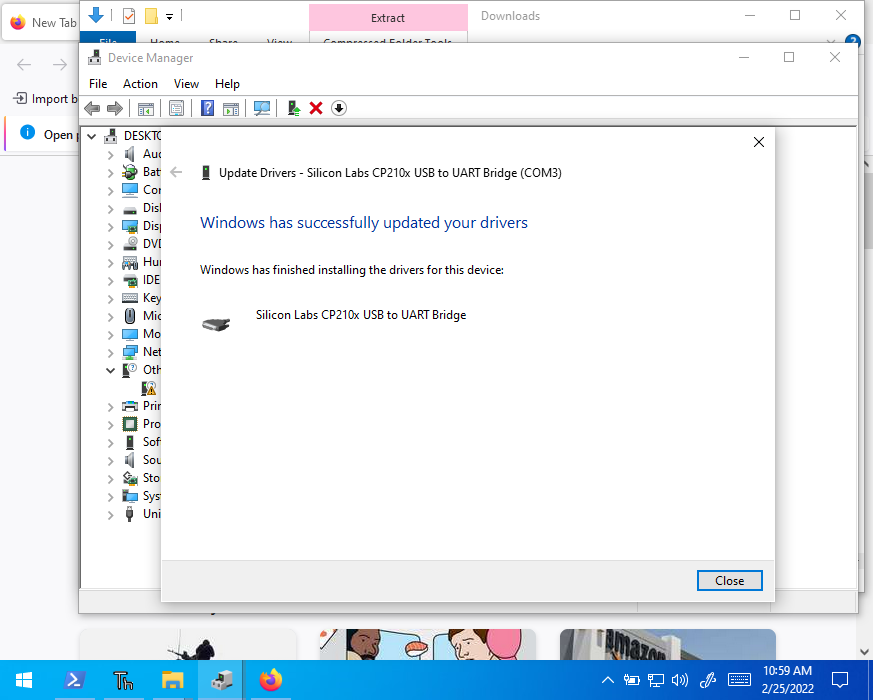

ESP32 Installation and Setup
Install Miniconda and packages
You need to use Python on your PC to program the ESP32.
-
install miniconda (win64 quick link). Follow this tutorial for detailed instructions.
-
Installing Thonny and other Packages: Open up powershell (win+x, i) and
- type
conda install -c conda-forge wrapt -
type
pip install esptool thonnyNote: on Mac, open up terminal or xterm and type
pip3 install esptool thonny
- type
Install Device Drivers
The device drivers will help your computer recognize the ESP32 as a USB Device
-
Install Silabs cp210x driver (windows download)
This step is required if the device is not recognized as a virtual COM port.




Flashing the ESP32 Firmware for MicroPython
-
download firmware (I don't recommend v1.18, use the nightly build as it contains several more recent fixes to PWM)
-
open cmd and type
thonny
-
open up tools-->options, select the "interpreter" tab and ensure that "Micropython (ESP32)" is selected. Select the "Silicon Labs CP210X USB to UART Bridge Com(XY)" down below.


-
Before selecting ok, in the bottom right hand corner select "install or update firmware". select the right port corresponding to the "Silicon Labs CP210X USB to UART Bridge Com(XY)"
-
select the firmware you downloaded, (e.g. "esp32-20220117-v1.18.bin") and hit "install".

-
wait for the install to finish

-
Look at the interpreter window. You should see:
``` MicroPython v1.18 on 2022-01-17; ESP32 module with ESP32
Type "help()" for more information.
```

-
type
print('hello, world!')into the shell and that's it! You should have a working python interpreter loaded on your ESP32!
Mac Specific Suggestions:
- use terminal or xterm if you have it as Macs do not have powershell
- use
pip3 install ...instead ofpip install ...with the most recent flavors of MacOS -
make sure
piporpip3(Mac) is updated to avoid installation errorsbash python3 -m pip install --upgrade pip -
Mac doesn't do COM, but can list USB devices. In your terminal, type:
bash ls -al /dev/tty.then unplug your ESP32 and run the previous command again to see which name for the device is the ESP32
-
when selecting the port, there may be two Silicon Labs CP210X USB to UART Bridge (ESP device name here) devices. Watch the messages in the terminal to determine the correct selection (obviously, don't use the one that says error/cannot find/etc.)
- when running the program you may need to press ctrl + c twice within thonny
Issues
If you install on a computer where you don't have administrative access, it is still possible to install but you have to remember a couple things:
After instlling anaconda, you must add it to your path every time you want to run it.
-
Start --> "cmd"
set PATH=C:\Users\<MYUSERNAME>\Miniconda3;C:\Users\<MYUSERNAME>\Miniconda3\Library\mingw-w64\bin;C:\Users\<MYUSERNAME>\Miniconda3\Library\usr\bin;C:\Users\<MYUSERNAME>\Miniconda3\Library\bin;C:\Users\daukes\Miniconda3\Scripts;%PATH%- Replace
with your username; confirm the path exists. - This step is required every time you load thonny if you installed "just for me" or are on an administratively locked pc.
- Replace